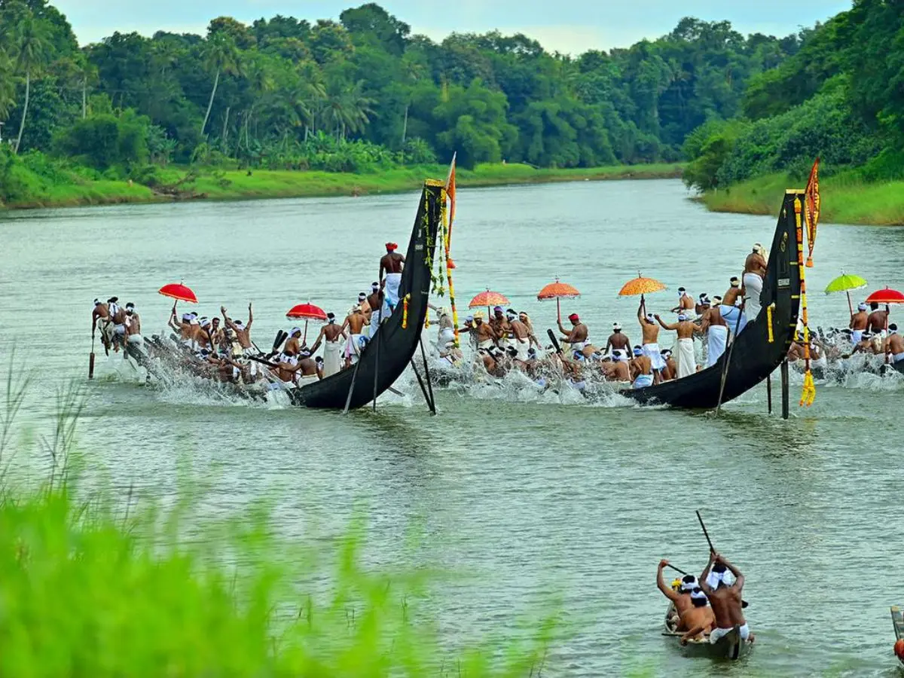

Alappuzha Boat Race
ആലപ്പുഴ വള്ളംകളി


The Alappuzha Boat Race, officially the Nehru Trophy Boat Race, traces its origin to 22 December 1952, when Jawaharlal Nehru, then Prime Minister of India, travelled through the Kuttanad backwaters near Alappuzha and was received by villagers with a flotilla of snake boats. An impromptu race of nine chundan vallams was staged in his honour, won by the Nadubhagam Chundan, and Nehru is said to have climbed aboard the winning boat to ride it the rest of the way to the town. On returning to Delhi, he donated a silver trophy cast as a replica of a snake boat mounted on a wooden pedestal, stipulating that the race be held annually thereafter, and the regatta formally took the name Nehru Trophy Boat Race from 1954 onward.
As the best known of Kerala's vallam kali, or boat race, traditions, the event holds a place in the state's cultural calendar comparable to its major temple festivals, drawing on a form of competitive rowing that predates the modern race by centuries and was historically tied to martial and ceremonial display among Kuttanad's ruling houses. The chundan vallam itself, built without nails in a construction technique using wooden planks stitched and caulked together, is credited to the erstwhile royal house of Chempakassery, whose carpenters are said to have designed the long, high-prowed hull to carry soldiers swiftly through the backwaters during regional conflicts. The race's significance today is as much economic and touristic as cultural, anchoring Alappuzha's identity as a backwater tourism hub and feeding into the state-run Champions Boat League, which now organises the event alongside other vallam kali fixtures across Kerala.
Held on Punnamada Lake on the second Saturday of August, the race brings together chundan vallams that can exceed 100 feet in length and seat upward of a hundred oarsmen, along with a helmsman and several singers who set the pace through vanchipattu, the traditional boat songs whose rhythm coordinates the rowers' strokes. Each boat is traditionally owned and maintained by a village, kara, or community trust, with upkeep, repainting, and ritual rites performed before every season, and teams train for weeks ahead of the race under a captain who calls the stroke. The competing boats are grouped into categories, and the chundan vallam class remains the centrepiece event, judged purely on speed over the straight course laid out on the lake in front of tens of thousands of spectators seated along its banks and on boats anchored nearby.
Among the individual boats associated with the race, the Nadubhagam Chundan that won the original 1952 contest holds a Guinness World Record as the longest rowing boat in the world, though the vessel itself fell into prolonged disrepair in subsequent decades, prompting periodic public appeals for its restoration and conservation as a historical artifact rather than a competing craft. Other storied boats, such as the Karichal Chundan and Nadubhagam's rivals from Champakulam and Kainakary, have built up their own decades-long rivalries and followings, with ownership and bragging rights passing between villages year to year depending on race outcomes. High-profile attendees over the decades, including members of the Nehru-Gandhi family revisiting the race their ancestor founded, have periodically renewed national attention on the event beyond its regional following.
Administration of the race today rests with the Kerala Tourism Department in coordination with the District Tourism Promotion Council and the Nehru Trophy Boat Race Committee, which registers participating boats, enforces safety and crew regulations, and organises the logistics of a spectator event that regularly draws visitors from across India and abroad. Alappuzha's broader identity as the 'Venice of the East', built on its network of canals, lagoons, and backwater houseboats, is reinforced each August when the town's economy turns substantially toward hosting race crowds, media coverage, and ancillary cultural programming tied to the regatta. The race now functions as the flagship fixture of Kerala's wider boat racing season, with its winners carrying the title into the state's Champions Boat League standings for the year.
| Date of Introduction | August 11, 1984 |
|---|---|
| Address | Senior Postmaster, |
| Alappuzha HO, | |
| Alappuzha (dt.), Kerala - 688001. |